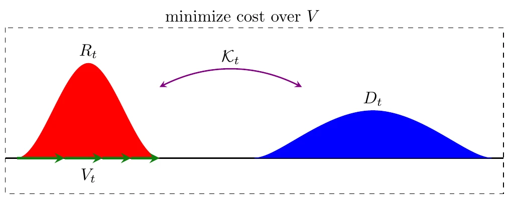
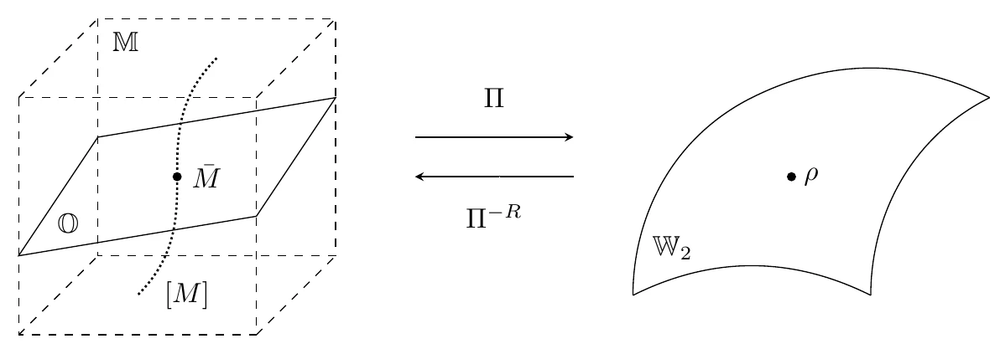
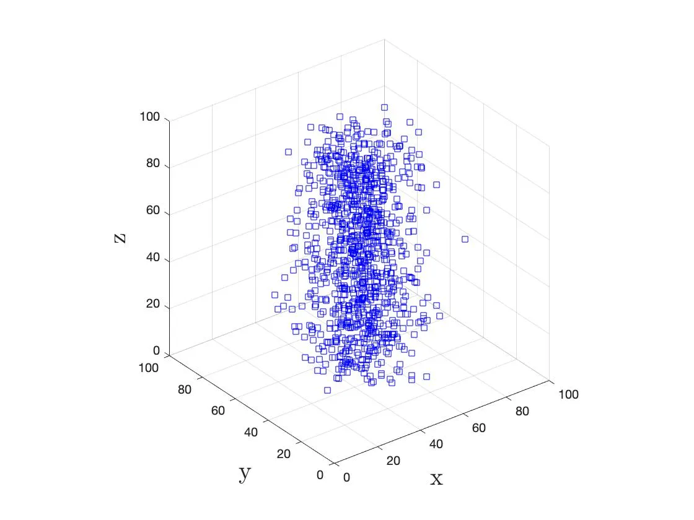
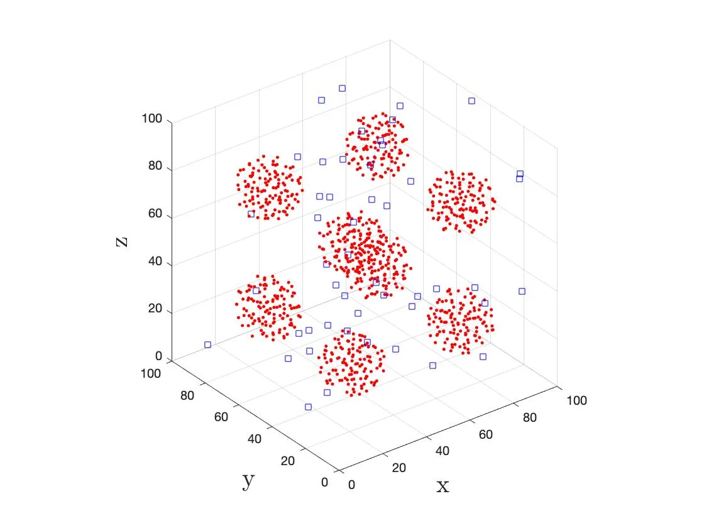
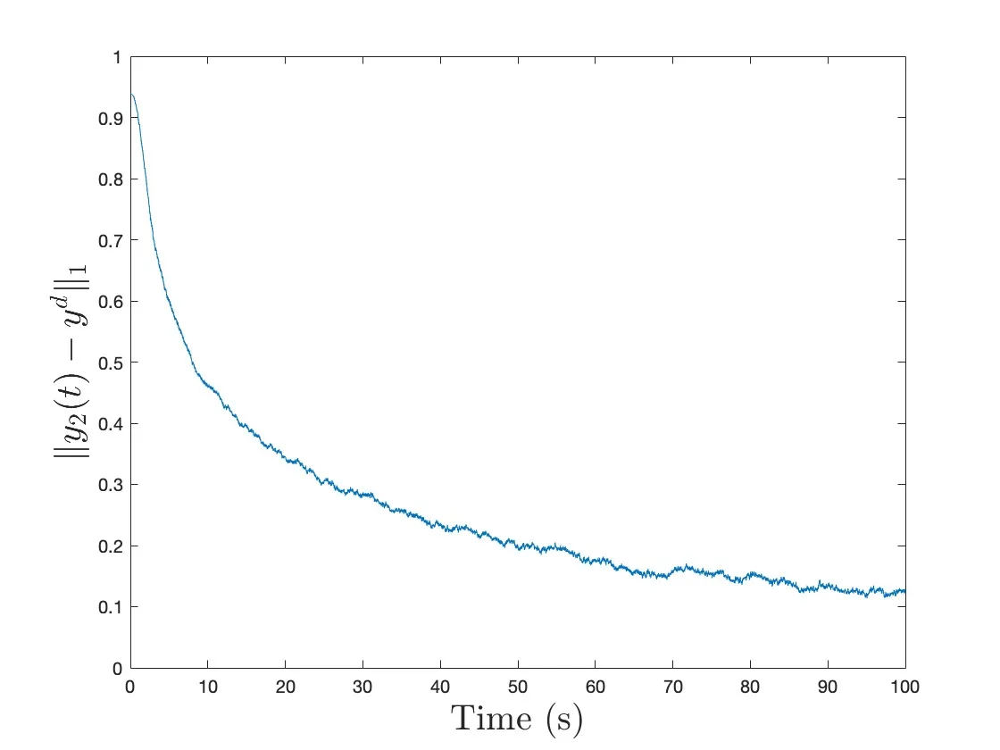

集群密度控制：Wasserstein 跟踪与非完整系统镇定
这篇 note 联读两篇把“集群控制”提升到“概率密度演化控制”的论文：一篇从 2-Wasserstein 几何讨论连续体 swarm 的最优跟踪，另一篇处理非完整约束下的密度镇定。 前者回答“往哪走、走多快”，后者回答“当个体受运动学约束时，密度反馈如何仍然可达且可稳”。
P1 把密度跟踪写成 Wasserstein 流形上的几何最优控制，P2 则说明在非完整约束下，集群密度依然可以通过可达性与局部反馈被稳定到目标分布。
1. 问题与文献定位
这两篇文献的共同点，是都不再把控制目标停留在单个 agent 的轨迹层，而是直接控制集群在空间上的分布形态。差别在于：P1 讨论的是 tracking 与运动代价之间的几何折中，P2 处理的是非完整约束下的 stabilization 与可达性问题。P1 对应的是 CDC 2023 会议论文，并保留 arXiv 版本；P2 已发表于 IEEE TAC 2024，预印本见 arXiv[R1][R2]。
2. P1：Wasserstein 空间中的几何降维与调度
P1 的关键做法是把原始 PDE 控制问题改写成 Wasserstein 空间 $\mathcal{W}_2$ 上的曲线优化问题。这样一来，原来混在一起的“匹配代价”和“移动代价”，可以分别落到密度间距离与流形速度上。

关键
- 把控制输入 $V_t$ 诱导的运动耗散，通过连续性方程与 Benamou-Brenier 表述，解释为密度曲线 $R_t$ 在 Wasserstein 流形上的速度平方 $|R_t'|^2$。
- 在静态目标分布 $D$ 下，最优密度演化不再需要在函数空间里“盲搜”，而是被压缩为沿 $R_0 \to D$ 的 Wasserstein 测地线前进。
- 因此，“往哪走”由几何测地线决定，“走多快”退化为一个一维标量调度问题，对应的反馈律可写成 $$V_t = -\frac{f(t)}{\alpha}(\mathcal{I} - \bar{M}_t),$$ 其中 $\bar{M}_t$ 是当前分布到目标分布的最优传输映射。
这一步最重要的收益，不只是得到一个漂亮的公式，而是把无穷维最优控制里的“空间方向”和“时间调度”拆开了。对后续做近似实现或模型预测控制，这种分层非常关键。

3. P2：非完整约束下的可达性与密度镇定
P2 的关键点不在于再做一次椭圆型扩散稳定性分析，而在于把个体的非完整运动学约束保留下来。由于生成元退化为次椭圆算子，常见的强椭圆工具不能直接照搬，因此需要先证明可达，再讨论稳定。
关键
- 若受限向量场满足 Hörmander 条件，则虽然个体运动学是退化的，但对应算子仍能建立闭性、自伴性与正半群，从而保证宏观密度演化模型本身是合法的。
- 当目标密度有严格正下界时，可以构造状态反馈使系统指数收敛到目标密度。
- 为了处理更实际的“目标分布含空腔”情形，文中引入 hybrid switching diffusion 与局部密度反馈 $$ (F_i(f))(x) = r_i\bigl(f(x) - y^d(x)\bigr), $$ 并进一步证明对应的半线性 PDE 在 $L^1$ 意义下全局渐近稳定。



4. 两点启发
如果把问题放回塑形视角，这两篇文献真正提供的不是“更多功能”，而是两类底层结构。
- 度量层： P1 说明密度控制里“代价几何”不是附属品，而是核心建模对象。有限维系统里的动能矩阵，在这里被 2-Wasserstein 度量接管；控制器首先要决定的是在什么几何下比较两条密度轨迹。
- 受限驱动层： P2 说明即使瞬时可控方向不够，仍然可以借助李括号可达性、交互扩散与局部密度反馈，在宏观分布层实现稳定。这为把欠驱动或非完整约束引入密度层面的塑形提供了合法性基础。
5. 参考文献
- Max Emerick, Bassam Bamieh. Continuum Swarm Tracking Control: A Geometric Perspective in Wasserstein Space. In 62nd IEEE Conference on Decision and Control (CDC), pp. 1367-1374, 2023. DOI · arXiv
- Karthik Elamvazhuthi, Spring Berman. Density Stabilization Strategies for Nonholonomic Agents on Compact Manifolds. IEEE Transactions on Automatic Control, 69(3):1448-1463, 2024. DOI · arXiv